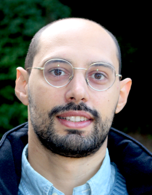

Alessandro Podo



Contact Info
Email: podo@ihes.fr
Office 1S4
IHÉS
35 Route de Chartres
Bures-sur-Yvette, 91440 (France)
I am currently a postdoc at the Institut des Hautes Études Scientifiques in Bures-sur-Yvette (Paris), working in the group of Julio Parra-Martinez and Slava Rychkov.
Before moving to IHÉS, I was a Postdoctoral Research Scientist in the High Energy Theory group at Columbia University, New York, where I worked primarily with Alberto Nicolis and Lam Hui. I obtained my PhD in theoretical physics at the Scuola Normale Superiore in Pisa, Italy, where my PhD advisor was Roberto Contino and I also worked with Enrico Trincherini.
I am a theoretical physicist and in my research I address questions mainly motivated by the theory of fundamental interactions. My current research is focused on Quantum Field Theory, from its formal side to its applications to the theoretical study of gravity, the dynamics of gauge theories, and the study of field theories in non-trivial backgrounds. This includes black holes and cosmological backgrounds, and finite density phases of relativistic QFTs. I have also worked on phenomenological aspects of particle physics, including the strong CP problem, the QCD axion, and dark matter. I keep an interest in the mathematical side of theoretical physics.
Alessandro Podo